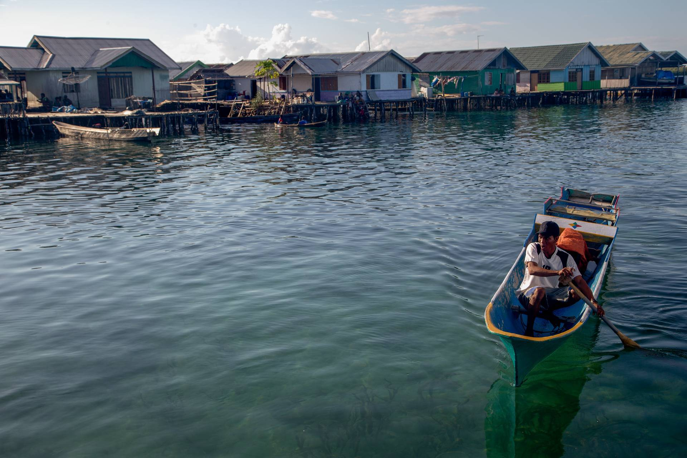
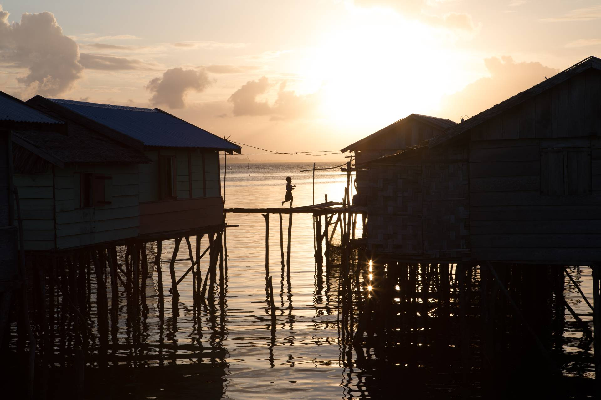

COLLECTORS
Around the world several million ornamental fish collectors harvest an astounding 18-30 million fishes from coral reefs each year. In Indonesia, as in many countries involved in the marine aquarium trade, harvesters are scattered all over the country, with little regulation guiding how they harvest and handle fish. This means the process of catching aquarium fish can look very different from country to country, region to region, and reef to reef.
This story begins in Central Sulawesi, an island province of Indonesia that resembles a scorpion with its stinger poised to strike. In one of the few remaining areas where blue tang populations remain healthy, our team was lucky to meet aquarium fishers from the indigenous group known collectively as the Sama-Bajau in the Bokan Kepulauan District in Central Sulawesi. Often referred to as “sea nomads” the Sama-Bajau have historically lived exclusively on boats, traveling with family units of five or six people, until forced resettlement pushed these nomads into coastal homes decades ago. While settled, their tie to the ocean remains strong as they often live in stilt houses over the water, and range long distances to fish. Their knowledge, skill and savvy of fishing in the Indo-pacific seas remain unparalleled.
This was true for Rasdin, an experienced collector and father of two that we met in Central Sulawesi, on the remote island of Toropot. A lifelong collector, Rasdin uses a hookah–a long plastic hose connected to an air compressor–to breathe underwater while collecting fish. In a show of underwater grace, Rasdin dives down to reefs and creates a barrier with a fine mesh net to entrap fish. After herding targeted fish into this barrier, he either scoops up individuals with a small hand net and transfers them to a bag at his side, or hand carries individual fish to a net hanging off the side of his boat, depending on the species. Each harvesting trip is different and many factors affect what he catches: seasonal fish breeding and feeding patterns as well as changing weather. Some days he may catch a large, elegant emperor angelfish (Pomacanthus imperator), a coveted aquarium species, or the now world-famous common clownfish (Amphiprion ocellaris). Sometimes, Rasdin will go to depths of over 150 feet to find certain elusive and expensive species of fish. For many reasons (including air bubbling in the bloodstream, which can cause death), harvesting for the marine aquarium trade is considered risky and many collectors, though proud of their profession, do not want their children following in their footsteps. Instead, as with many parents around the world, they want their children to pursue education so they can follow a less risky career path.
For the blue tang, Rasdin can catch fifty or more in one harvesting trip, and for these he will get $1-2 USD per fish. Once in a retail store, the same blue tang can sell anywhere from $50-300 USD depending on the size and health of the individual. Rasdin will keep the captured live fish in a net pen hanging under his home for a week or two until the middleman comes to pick them up and sends them along to the next step of the supply chain.
Cyanide
Cyanide is a powerful poison. It is a neurotoxin that disrupts enzyme and biological processes and prevent cells from using oxygen. Cyanide was first used in the aquarium trade in 1962 across several villages on Olango Island, Cebu in the Philippines. On this small island middlemen realized if they provided their fishers with cyanide they could stun and capture dozens to hundreds of reef fish at once. It didn’t matter that 50% of these fish would die, because they were still passing on a larger volume of fish than was possible with traditional net harvesting methods. Word spread across the Philippines and eventually all of Southeast Asia and cyanide-stunning became the predominant method of capture. Up to 70% (tens of millions) of all fish in the marine aquarium trade are captured using cyanide. Unfortunately, cyanide does not discriminate and affects everything in its path: other marine organisms, hard and soft corals, and people. Even though fishers dilute the poison (generally using one or two 20-gram sodium-cyanide tablets diluted in a liter squirt bottle) experts say that any human exposure to cyanide, especially repeated exposure, carries health risks due to the potency of the poison. In recent years, conservation organizations have teamed with various players in the trade, including exporters, to enact legislation as well as education and training programs for fishers to once again become proficient in more sustainable net harvesting methods.
-
An aquarium collector shows his catch. Generally collectors in this region attempt to catch blue tang that are smaller in size than this one. Middlemen prefer smaller fish because they are easier to transport and tend to better survive the long journey ahead
Photo: Shannon Switzer Swanson -

Rasdin is a Bajo fisher. They often use a technique called “hookah” to fish, using a rubber hose to transport air from a compressor on a boat to the diver below
Photo: Shannon Switzer Swanson -

Aquarium collector, Rasdin, paddles over to a neighbor’s home in a traditional “perahu” to drop off equipment and talk about the day’s catch. Most homes in his village are built over the water
Photo: Shannon Switzer Swanson -

Aquarium collector, Rasdin, explaining fishing strategies on the porch in front of his house with his wife and children looking on
Photo: Shannon Switzer Swanson -
Rasdin mends the hand-held barrier net he uses to collect aquarium fish. Equipment is difficult to come by in these remote islands so collectors will mend and re-use the same net hundreds of times
Photo: Shannon Switzer Swanson -
Using hand-held barrier net, like Rasdin is doing here to catch a clown fish, is thought to be more sustainable than using cyanide to temporarily stun aquarium fish. Collectors across the world began using cyanide, because they could catch many more fish with less effort, but many fish die needlessly with this approach, and the poison is bad for coral and human health
Photo: Shannon Switzer Swanson -

A rusty compressor used for hookah diving on an aquarium collector's boat. Compressors are often breaking, and fishermen are constantly having to repair them
Photo: Caleb Kruse -

Some hookah lines have scuba diving regulators attached, like this one, while others are simply the end of the hose that a collector places in their mouth, making them even more dangerous
Photo: Shannon Switzer Swanson -

Rasdin searches for a flash of blue and yellow with hand-net and hookah line in tow
Photo: Shannon Switzer Swanson -
Rasdin has set his net around a large anemone and various soft corals and attempts to chase several aquarium fish into the net
Photo: Shannon Switzer Swanson -
Rasdin unfurls the bowline in preparation for docking next to his home after a fishing trip
Photo: Shannon Switzer Swanson -

Most Bajo fishers live in stilt houses above the water connected by narrow plank walkways
Photo: Shannon Switzer Swanson -
Rasdin attempts to chase several aquarium fish into the net. The net method takes a great deal of skill and patience, which is why many collectors still opt to use cyanide if they can access the poison
Photo: Shannon Switzer Swanson -
An afternoon’s catch, which includes several characters from the cast of Finding Nemo and Finding Dory, including the popular aquarium species, the moorish idol (Zanclus cornutus), who went by the name of Gill in the movies
Photo: Shannon Switzer Swanson -

Alwan, a collector from islands near the Malukus dons his fishing gloves in preparation for a collecting session
Photo: Shannon Switzer Swanson -
Collectors often use homemade equipment, fashioned from items they already have at home. These fins were cobbled together with old pieces of plastic and rubber
Photo: Shannon Switzer Swanson -
An aquarium collector takes a final breath before diving down to search for blue tang
Photo: Shannon Switzer Swanson -
In addition to collecting aquarium fish, Alwan, like many fishermen in the region, also fish for numerous other species depending on the time of year and what season it is. Alwan uses many of the items hanging in his home behind him to hunt for octopus
Photo: Shannon Switzer Swanson -

Blue tang are a particularly shy species and will wedge themselves amongst coral heads like this one and refuse to budge. This collector uses a poker to try to coax a blue tang out of its hiding spot but to no avail. These challenges are why most collectors opt to use a hookah line if they can afford the equipment
Photo: Shannon Switzer Swanson -
A blue tang waits to be transferred to a container on the collector’s boat
Photo: Shannon Switzer Swanson -

And so begins the blue tang’s long journey from reef to aquarium
Photo: Shannon Switzer Swanson -
Aquarium fish provide a significant source of income to collectors, but collecting fish from the reef can alter the ecosystem from which they come. Little is known about these effects and more research is needed
Photo: Mikayla Wujec -
Aquarium fish that are caught are often kept in net pens at the collector’s home until the middleman can come and buy them
Photo: Shannon Switzer Swanson